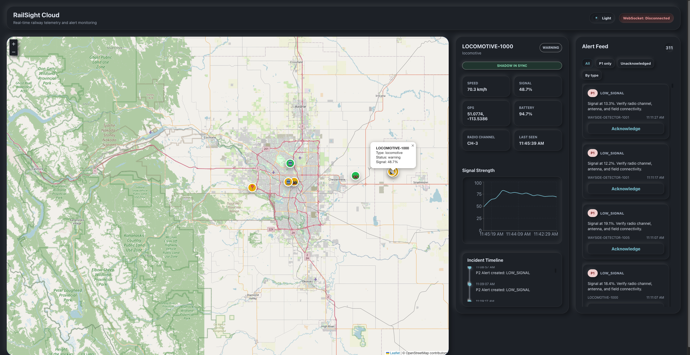
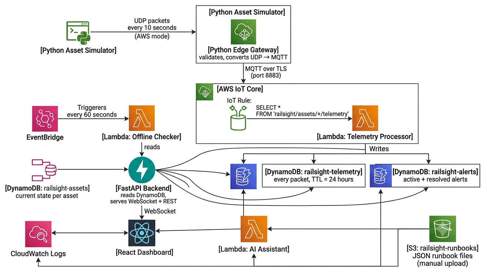

Field Asset Simulation
Thirty simulated railway assets generate realistic UDP telemetry every 10 seconds, including signal strength, GPS position, speed, battery level, radio channel, and operational status.
Real-Time Field Asset Monitoring and AI-Assisted Troubleshooting for Railway Operations
Scroll to follow telemetry from the field edge to the cloud dashboard.
RailSight models the path a field asset update takes from a simulated railway device to a live operator dashboard.
Thirty simulated railway assets generate realistic UDP telemetry every 10 seconds, including signal strength, GPS position, speed, battery level, radio channel, and operational status.
A Python edge gateway receives raw UDP packets, validates the schema, filters malformed events, and converts telemetry into MQTT messages.
MQTT telemetry is published over TLS to AWS IoT Core, where IoT Rules route events into Lambda and DynamoDB.
FastAPI reads the latest asset state and pushes live updates over WebSocket to a React dashboard with maps, charts, alerts, and incident timelines.
An AI assistant uses structured telemetry, CloudWatch logs, and S3 runbooks to help operators investigate incidents faster.
RailSight gives operators a live view of field assets across Alberta, including asset health, signal trends, GPS position, severity-ranked alerts, and incident timelines.

Live Leaflet map P1/P2/P3 alert feed Signal history chart Asset status cards WebSocket updates Incident timelineRailSight mirrors a realistic railway telemetry pipeline: UDP at the edge, MQTT into AWS IoT Core, Lambda-based event processing, DynamoDB state storage, and a FastAPI WebSocket backend powering a React control center.

Threads simulate locomotives, detectors, radios, and track sensors.
Validates UDP packets and republishes MQTT telemetry.
Receives TLS-secured MQTT events and applies routing rules.
Stores telemetry, updates assets, and generates alerts.
Persist asset state, telemetry history, and alert records.
Serves REST endpoints and live WebSocket updates.
Displays map, alert feed, charts, and incident timelines.
Uses logs, telemetry, and runbooks to guide investigations.
What it does
RailSight simulates railway field assets such as locomotives, wayside detectors, radios, and track sensors sending UDP telemetry to a Python edge gateway. The gateway validates each packet, converts UDP telemetry into MQTT messages, and republishes them to AWS IoT Core. Cloud-side IoT Rules route telemetry into Lambda and DynamoDB, while a FastAPI WebSocket backend serves a live React dashboard with AI-assisted incident troubleshooting from CloudWatch logs and S3 runbooks.
Why I built it
I wanted to build something that reflected how railway field systems actually work: telemetry at the edge, protocol translation through a gateway, cloud-based monitoring, and operator-focused troubleshooting.
Features
Color-coded railway assets displayed on a Leaflet map centered on Alberta.
P1, P2, and P3 alerts generated from signal drops, unexpected stops, duplicate telemetry, and offline assets.
Per-asset event history showing how an issue developed over time.
Under development: AI-assisted investigation using telemetry, CloudWatch logs, and S3 runbooks.
Under development: Bash and AWS CLI script to check local services and AWS resources.
Under development: trend views for signal history, asset reliability, and alert patterns.
Tech stack
Project impact
RailSight was built as a portfolio project to demonstrate practical software engineering across networking, cloud infrastructure, backend systems, real-time dashboards, and incident-focused user experience.
Models field packets using UDP and a local gateway boundary.
Bridges lightweight field telemetry into cloud-native IoT ingestion.
Uses Lambda and DynamoDB to persist state and detect incidents.
Streams operational state into a real-time control-center UI.
FAQ
No. RailSight uses simulated telemetry to model how railway field assets could report operational state into a cloud monitoring platform.
UDP models lightweight field telemetry where devices send frequent status packets to a local gateway. The gateway then validates and republishes events into a reliable cloud ingestion path.
AWS IoT Core provides MQTT-based ingestion, TLS security, device shadows, and IoT Rules for routing telemetry into serverless processing.
The system includes edge simulation, protocol translation, cloud event routing, live WebSocket updates, alert severity, asset state, telemetry history, and troubleshooting workflows.
The AI troubleshooting assistant, Bash health-check automation, and analytics dashboard are currently under development.
RailSight brings together edge telemetry, AWS serverless systems, live dashboards, and AI-assisted troubleshooting into one railway operations control center.